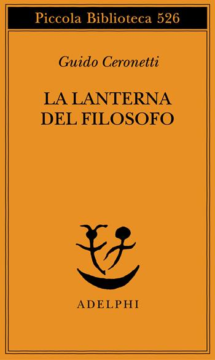
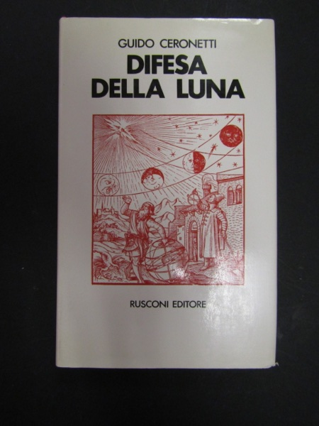

26:26 · 5 OPERE
Guido Ceronetti, La Lanterna del Filosofo
Il filo del discorso
La lettura di Ceronetti diventa un percorso sul rapporto tra pensiero, vulnerabilità e società contemporanea. Il contributo presenta La lanterna del filosofo come una raccolta da attraversare lentamente, seguendo la densità della sua prosa. L’immagine dell’uomo a piedi introduce la critica della civiltà automobilistica e della distanza dell’uomo dal mondo. Il confronto con Fromm sposta l’attenzione sull’indifferenza, sul narcisismo e su una normalità che può nascondere forme di alienazione. Attraverso pagine dedicate a Blake e Piovene emergono anche la violenza, la stupidità collettiva e la fragilità della cultura. Nella conclusione, il richiamo alla filosofia come interlocutrice consolatrice apre una questione etica: anche il pensatore pessimista, quando scrive e prova a farsi ascoltare, conserva una responsabilità verso gli altri.
I libri nel discorso

La lanterna del filosofo
Copertina: Adelphi, 2005
Titolo e autore espliciti in apertura, seguiti da letture e commenti. Adelphi e 2005 sono detti nel video, ma non verificati visivamente sull’esemplare.
Passaggio 0:13 ↗ · Fonti e libro ↗
I cosiddetti sani
Copertina: Mondadori, 1997 · Oscar saggi
Fromm, il curatore Rainer Funk e il titolo sono espliciti. La patologia della normalità, richiamata a 527 e 904 secondi, è il sottotitolo della stessa opera secondo il catalogo bibliotecario.
Passaggio 2:23 ↗ · Fonti e libro ↗
Difesa della luna e altri argomenti di miseria terrestre
Copertina: Rusconi, 1971 · fotografia di un esemplare
Il video lo presenta in forma abbreviata come in difesa della luna, tra i libri di Ceronetti. Il catalogo della Biblioteca Universitaria di Pisa riscontra titolo completo e autore.
Passaggio 7:19 ↗ · Fonti e libro ↗Uomo morale e società immorale
Copertina: Jaca Book · Figure del pensiero moderno
Autore riconoscibile sebbene deformato e titolo esplicito; la congiunzione e è normalizzata sulla scheda bibliotecaria.
Passaggio 11:17 ↗ · Fonti e libro ↗
Zibaldone di pensieri
Copertina: Feltrinelli · Universale Economica, I classici
Leopardi e Zibaldone sono nominati nel confronto tra grandi prosatori; di pensieri è completamento bibliografico, senza attribuzione di edizione.
Passaggio 12:48 ↗ · Fonti e libro ↗